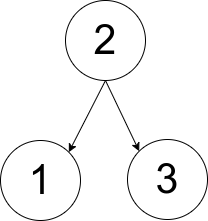
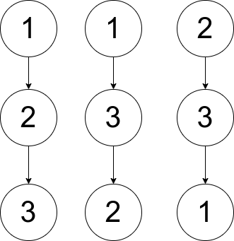

| Category | Difficulty | Likes | Dislikes |
|---|---|---|---|
| Algorithms | Hard | 233 | 157 |
uber
You are given an array pairs, where pairs[i] = [xi, yi], and:
xi < yiLet ways be the number of rooted trees that satisfy the following conditions:
pairs.[xi, yi] exists in pairs if and only if xi is an ancestor of yi or yi is an ancestor of xi.Two ways are considered to be different if there is at least one node that has different parents in both ways.
Return:
0 if ways == 01 if ways == 12 if ways > 1A rooted tree is a tree that has a single root node, and all edges are oriented to be outgoing from the root.
An ancestor of a node is any node on the path from the root to that node (excluding the node itself). The root has no ancestors.
Example 1:

Input: pairs = [[1,2],[2,3]]
Output: 1
Explanation: There is exactly one valid rooted tree, which is shown in the above figure.Example 2:

Input: pairs = [[1,2],[2,3],[1,3]]
Output: 2
Explanation: There are multiple valid rooted trees. Three of them are shown in the above figures.Example 3:
Input: pairs = [[1,2],[2,3],[2,4],[1,5]]
Output: 0
Explanation: There are no valid rooted trees.
Constraints:
1 <= pairs.length <= 1051 <= xi < yi <= 500pairs are unique.